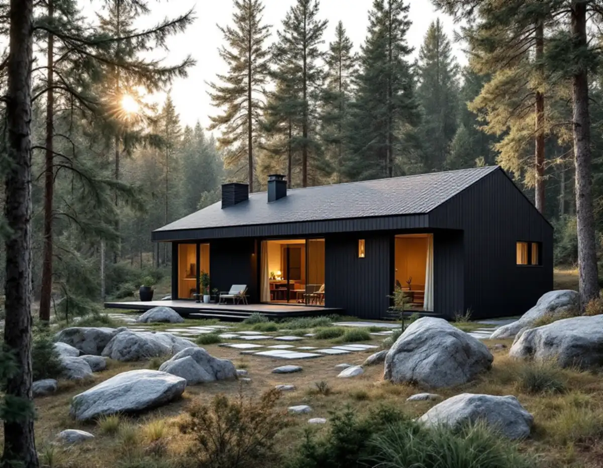
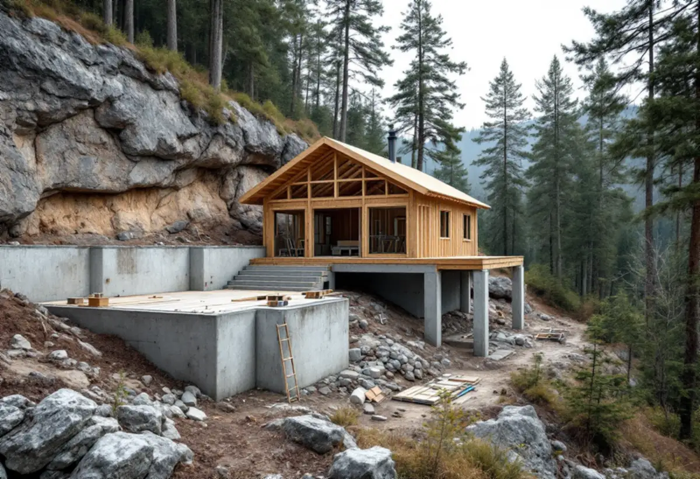

Kartan först
Vi kontrollerar kulturmiljökartan, detaljplanen och strandskyddet.
På en stor naturtomt i Danderyd finns ofta plats för ett litet hus till, men i villastäderna är det sällan bara måtten som avgör. Geal Entreprenad AB bygger komplementbostadshus nyckelfärdigt och börjar med att ta reda på om tomten ligger i ett område där kommunen kräver bygglov.

Danderyds översiktsplan beskriver två större riksintressen för kulturmiljövården, Djursholms villastad och Stocksunds villastad, utpekade sedan 1987. Djursholm var landets första villastad anlagd som förort, och bebyggelsen speglar främst åren 1890–1930. Uttrycket för riksintresset är bland annat det oregelbundna planmönstret kring Roslagsbanan, de stora naturtomterna och villorna. Stocksund präglas av ett planmönster anpassat till den kuperade terrängen. Översiktsplanen har preciserat riksintressena i 11 värdekärnor, och kommunen arbetar med detaljplaner för de 9 värdekärnorna i Djursholm.
Region Stockholm räknar Stocksund och Djursholm till de riksintressen i länet som är särskilt känsliga för förändring. Det märks i kommunens besked om de nya reglerna: inom kulturhistoriskt värdefulla områden och riksintressen för kulturmiljövården gäller lovplikt, även för ett komplementbostadshus som annars hade varit lovfritt. Kommunens kulturmiljökarta visar om tomten eller byggnaderna på den är utpekade.

Utanför de utpekade områdena får du bygga huset utan lov om det håller sig inom 30,0 kvadratmeter byggnadsarea och 4,0 meter till nocken, och om alla lovfria byggnader på tomten tillsammans stannar vid 45,0 kvadratmeter. Kommunen påpekar att det då inte görs någon granskning innan bygget börjar, och att ansvaret för att lagens krav uppfylls ligger på dig som fastighetsägare.
Den som vill ha ett besked i förväg kan söka ett frivilligt bygglov. Med ett sådant beslut från byggnadsnämnden vet du att huset du planerar uppfyller kraven. Vi bedömer att det kan vara värt det när tomten ligger nära gränsen till en värdekärna eller när huset ska hyras ut. Vill du hellre bygga ihop ytan med villan finns tillbyggnad i Danderyd, och måtten med paragrafer står i nya regler för attefallshus.
Kommunen skriver att ett komplementbostadshus kan behöva anmälan och startbesked trots lovbefrielsen, till exempel när en anläggning för vatten och avlopp installeras i huset eller på tomten, eller när huset får ventilation. Ökar bruttoarean på fastigheten ska du dessutom själv informera kommunens VA-enhet.
Närmare än 4,5 meter från gränsen krävs skriftliga medgivanden från alla berörda grannar. I vissa fall kan kommunen lämna medgivandet mot gata, torg, park eller naturområden. Förfrågan skickas via självservice med en skalenlig situationsplan, måttsatt mot fastighetsgränsen. Placeringen får inte hindra drift och underhåll av den allmänna platsen eller försämra sikten. Kommunen påminner om att detaljplanen ibland stoppar en placering nära gränsen, även om grannen säger ja.
Det generella strandskyddet gäller 100 meter från strandkanten, på land och i vattnet. Danderyds kommun skriver att strandskyddet inte gäller där en detaljplan antogs före den 1 juli 1975, och att kuststräckan till stor del är planlagd genom sådana äldre planer. När en äldre plan ersätts av en ny återinträder strandskyddet, och i nya planer står det om det har upphävts.
Vid Sätra ängar, Cedergrenska parken och Rösjön är strandskyddet utökat. Ligger tomten inom strandskyddet där krävs i regel dispens för ett nytt hus, och det är miljö- och stadsbyggnadsnämnden som prövar ansökan. Att huset är lovfritt enligt plan- och bygglagen påverkar inte strandskyddet, som regleras i miljöbalken.
Vi kontrollerar kulturmiljökartan, detaljplanen och strandskyddet.
Lovfritt, frivilligt bygglov eller bygglov – vi väljer väg tillsammans.
Plan, fasader och en situationsplan med mått mot gränserna.
VA och ventilation anmäls och VA-enheten informeras.
Grund, stomme och installationer fram till nyckelfärdigt hus.
Genomgång av huset och handlingarna du ska spara.
Rotavdraget gäller arbete på en bostad som redan finns. Skatteverket skriver att det inte går att få rotavdrag för att bygga en helt ny bostad, och att avdraget inte gäller ett helt nytt hus eller en liknande fristående byggnad på tomten. Ett komplementbostadshus i trädgården är just en sådan ny byggnad, så priset vi lämnar är utan avdrag.
Storlek och standard, om huset får kök och badrum, grund i kuperad eller bergig terräng, hur långt det är till villans ledningar och om ett bygglov behövs. Efter ett kostnadsfritt platsbesök får du ett skriftligt kostnadsförslag.
Komplementbostadshus på tomten.
Attefallshus →Takbyte, takbesiktning och plåtarbeten.
Takläggare i Danderyd →Djursholm, Stocksund och Enebyberg.
Takrenovering i Danderyd →Villastäder, ritningar och ventilation.
Badrumsrenovering i Danderyd →Tillbyggnad, tomt och kommunens riktlinjer.
Byggföretag i Danderyd →Kalkfärg på puts, linoljefärg på trä.
Fasadmålning i Danderyd →Villastäder, egnahem och grupphus i Danderyd.
Fasadrenovering i Danderyd →Lovplikt, klassning och spröjs i Danderyd.
Fönsterbyte i Danderyd →Varsamt underhåll av villafönster i Djursholm.
Fönsterrenovering i Danderyd →Originalgolv i villor från 1890-talet och framåt.
Golvläggare i Danderyd →Slipa parkett och mönstergolv i villan.
Golvslipning i Danderyd →Villastäder, egnahem och kommunens regler.
Köksrenovering i Danderyd →Villor, egnahem och grupphus i Danderyd.
Målare i Danderyd →Rännor, stuprör och beslag i Danderyd.
Plåtslagare i Danderyd →Altaner, staket och carport.
Snickare i Danderyd →Villastaden, takmaterial och solceller.
Takbyte i Danderyd →Tapet och papptak i äldre villor.
Tapetsering i Danderyd →Funkis, grupphus och 1950-talsvillor.
Tillbyggnad i Danderyd →Riva varsamt, bygga om helt.
Totalrenovering i Danderyd →